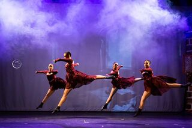

Tipos de Artes
- Música
- Dança
- Pintura
- Escultura
- Teatro
- Literatura
- Cinema
- Arte digital
Música
A música é uma forma de arte que se constitui na combinação de vários sons e ritmos, seguindo uma pré-organização ao longo do tempo. É considerada por diversos autores como uma prática cultural e humana. Não se conhece nenhuma civilização ou agrupamento que não possua manifestações musicais próprias. Embora nem sempre seja feita com esse objetivo, a música pode ser considerada como uma forma de arte, considerada por muitos como sua principal função. A criação, a performance, o significado e até mesmo a definição de música variam de acordo com a cultura e o contexto social. A música vai desde composições fortemente organizadas (e a sua recriação na performance), música improvisada até formas aleatórias. Pode ser dividida em gêneros e subgêneros, contudo as linhas divisórias e as relações entre géneros musicais são muitas vezes sutis, algumas vezes abertas à interpretação individual e ocasionalmente controversas. Dentro das "artes", a música pode ser classificada como uma arte de representação, uma arte sublime, uma arte de espetáculo.
Dança
A dança é a arte de fazer movimentos ritmados com o corpo. É uma expressão artística e cênica que envolvem os movimentos corporais em sua relação com diferentes estilos musicais. É o uso do corpo seguindo movimentos previamente estabelecidos (coreografia) ou improvisados (dança livre), com passos ritmados ao som e compasso de uma música, A dança é praticada desde os tempos pré-históricos, e por isso geralmente se diz que ela é uma expressão cultural que acompanha a humanidade. É uma das três principais artes cênicas da antiguidade, ao lado do teatro e da música, pois no antigo Egito existia danças astro-teológicas e na Grécia era frequentemente vinculada aos jogos.
Pintura
É a arte de pintar uma superfície, tais como papel, tela, ou uma parede (pintura mural ou afrescos). Devido ao fato de grandes obras de arte, tais como a Mona Lisa e A Última Ceia, do renascentista Leonardo Da Vinci, serem pinturas a óleo, a técnica é historicamente considerada uma das mais tradicionais das artes plásticas. Com o desenvolvimento tecnológico dos materiais, outras técnicas tornaram-se igualmente importantes como, por exemplo, a tinta acrílica. Diferencia-se do desenho pelo uso dos pigmentos líquidos e do uso constante da cor, enquanto aquele apropria-se principalmente de materiais secos.
Escultura
É uma arte que representa ou ilustra imagens plásticas em relevo total ou parcial. Existem várias técnicas de trabalhar os materiais, como a cinzelação, a fundição, a moldagem ou a aglomeração de partículas para a criação de um objeto. Vários materiais se prestam a esta arte, uns mais perenes como o bronze ou o mármore, outros mais fáceis de trabalhar, como a argila, a cera ou a madeira. Embora possam ser utilizadas para representar qualquer coisa, ou até coisa nenhuma, tradicionalmente o objetivo maior foi sempre representar o corpo humano, ou a divindade numa forma antropomórfica. É considerada a quarta das artes clássicas.
Teatro
Teatro, é uma forma de arte em que um ator ou conjunto de atores, interpreta uma história ou atividades para o público em um determinado lugar. Com o auxílio de dramaturgos ou de situações improvisadas, de diretores e técnicos, o espetáculo tem como objetivo apresentar uma situação e despertar sentimentos no público. Também denomina-se teatro o edifício onde se desenvolve esta forma de arte, podendo também ser local de apresentações para a dança, recitais, etc.
Literatura
A Literatura é a arte que usa a linguagem escrita como meio de expressão, seja em prosa ou em verso, de acordo com princípios teóricos e práticos; sendo o conjunto de obras escritas ou orais às quais reconhecemos um valor estético. A Literatura abrange qualquer coleção de obras escritas, incluindo escrita impressa e digital.
Cinema
Conhecido também como Sétima Arte e, em alguns contextos, cinematografia, é um termo que pode ser definido como a técnica e a arte que reproduz fotogramas de forma rápida e sequencial, criando "ilusão de movimento", bem como a indústria que produz essas imagens. O termo "cinema" também é comumente utilizado para designar a sala onde são projetados esses filmes.
Arte Digital
Arte Digital é aquela que se produz no ambiente gráfico computacional. Tem por objetivo criar obras de arte multimídia por intermédio de software e hardware, em um espaço virtual. Existem diversas categorias de arte digital, tais como: pintura digital, digigravura, modelagem digital, fotografia digital, animação digital, vídeo digital entre outras. Os resultados também podem ser apreciados depois de "impressos" em um suporte 2D ou em um objeto 3D, mas são melhor exibidos no próprio ambiente em que foram produzidos.